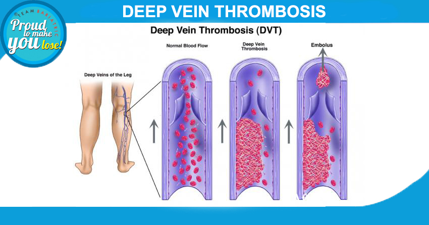

Preventing Deep Vein Thrombosis (DVT) with Bariatric Surgery: Anna's Story and Key Measures
Yesterday I had a surprise visit from my childhood friend Anna. Two years have passed since the day Anna had a close brush with death. Her story, in her own words, goes like this.
‘’I woke up with a start around 3 am, with heaviness in my chest. I sat up and noticed my heart was racing, I could hear it thumping, and it was becoming harder for me to breathe. Then, I stood up and started to walk, but after a few steps, I was dizzy and was back on my bed. Now my heart was racing even faster. I lied down wondering what was happening to me, I picked up my mobile and thought of calling emergency. My husband was out for an offsite and my two children were asleep, I hesitated, decided to wait, and went back to sleep.
I woke up again hours later with breathlessness and chest pain. Then I called my primary doctor’s office and spoke to her nurse. Her triage questions saved my life, she said,” You might have a blood clot in your lungs”. Suddenly I remembered that I had undergone knee surgery for fracture three weeks back. She asked me to rush to the ER. At the ER a nurse took my pulse and hooked me up to IV line and cardiac monitor. I felt so relieved when I received oxygen.
My doctor came in and ordered a CT scan of the chest, and the diagnosis of pulmonary embolism was confirmed. I was shifted to the intensive care unit, further tests confirmed a blood clot in my legs. My husband rushed back and he was informed that I needed surgery to have an IVC filter to prevent more clots in my legs from moving in my heart. I was given clot-dissolving medications. And I came back home 6 days later”.
I am now on blood thinners, maybe for life. And I have to wear my compression stockings all the time. I got my IVC filter removed after 6 months.
DVT (Deep Vein Thrombosis) and PE was a huge emotional setback for me, it took me many months to come out of it.
MEASURES TO PREVENT (Deep Vein Thrombosis) DVT/PE are:
- Quit smoking
- Exercise regularly
- Using compression stockings
- Lose weight
- Avoid long periods of physical inactivity
- During long flights, walk up the aisle every hour, and drink plenty of fluids.
Looking for a bariatric surgeon in Delhi for weight loss surgery to prevent DVT? Schedule an appointment with us at Smart Cliniqs.
Back to Blog